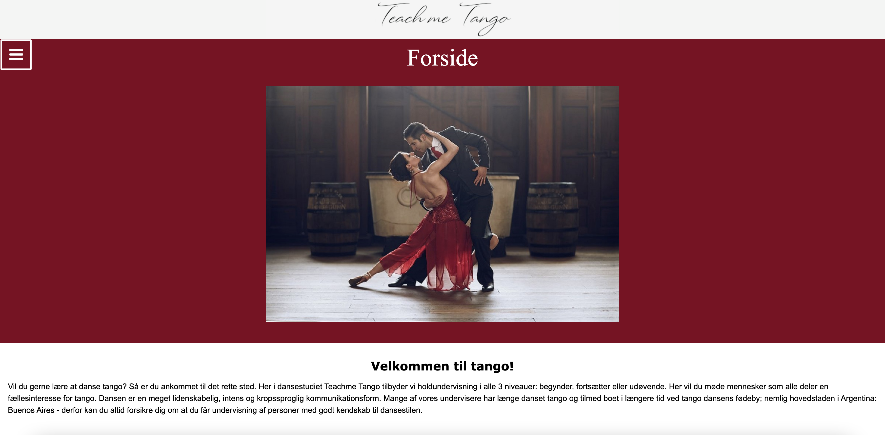

“Rumrejsen” var vores første tema i 1.semester. Temaet handlede
Om at vi skulle udvikle et koncept til et fiktivt rumrejseprogram.
Da det var vores første tema var det hele nyt for os, hvilket gjorde
at ingen i gruppen havde en decideret “grupperolle” som vi havde i
de næste temaer.

“Folkedans” var første del af et 4 ugers temaforløb. I dette forløb
skulle vi producere et website for en danseskole. I dette forløb var jeg
gruppens “afslutter”. Som “afslutter” var det mig som tjekkede op på
om vi har udført alle de krav der var stillet til projektet. Jeg skulle også
tjekke gruppens opgavebesvarelse igennem.

“Tango” var anden del af et 4 ugers temaforløb. Denne gang skulle
vi overlevere vores 1 dels projekt og overtage en andens gruppes
projekt. I dette forløb var jeg også gruppens “afslutter”.
Som “afslutter” var det mig som tjekkede op på om vi har udført alle
de krav der var stillet til projektet. Jeg skulle også tjekke gruppens
opgavebesvarelse igennem.